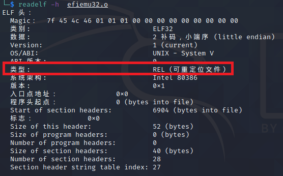
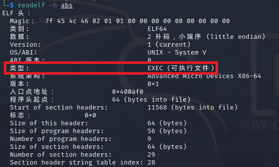
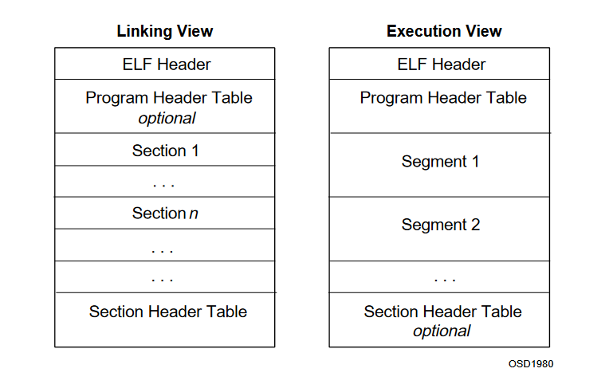
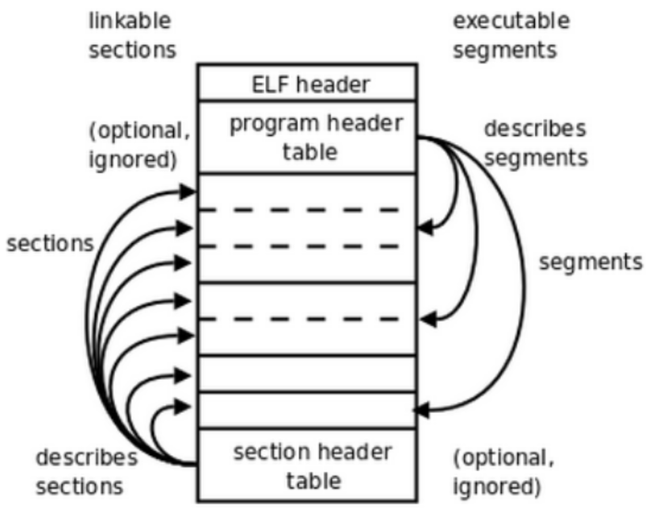
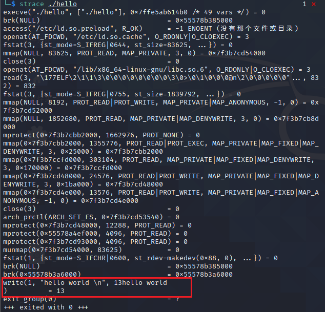
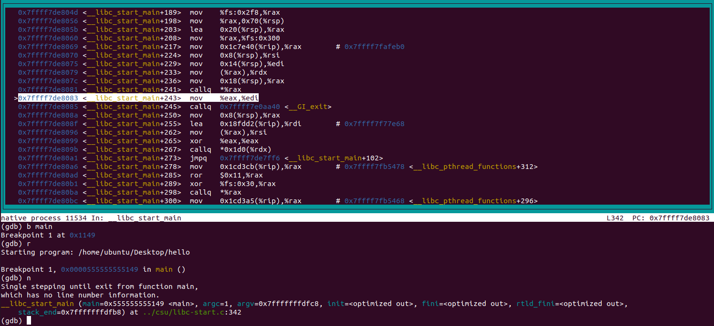
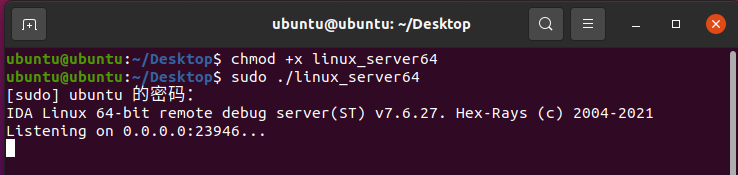
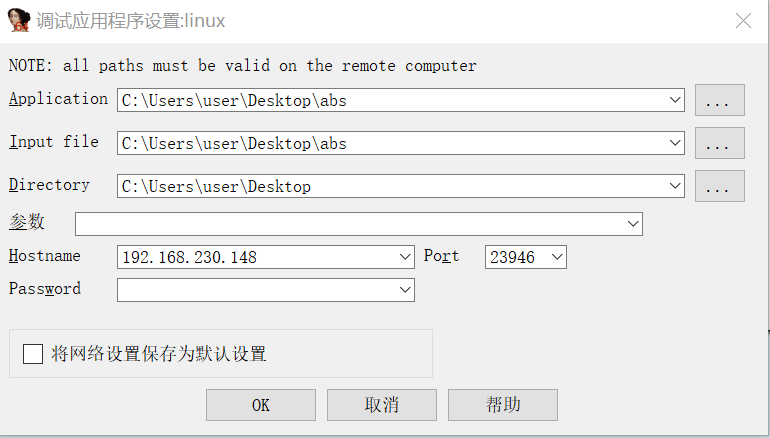
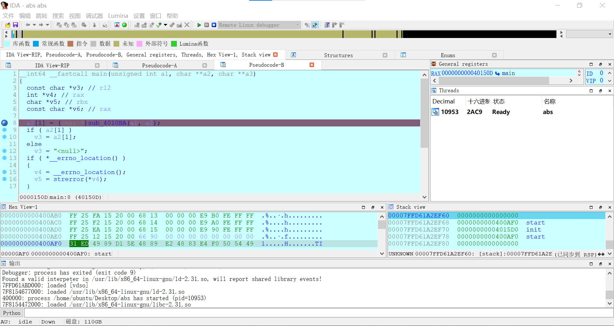

ELF恶意程序分析
网上关于ELF病毒分析的资料太难找了，也很不成体系，其实也能理解，毕竟linux系统占有量太少了，市面上还是windows偏多。自己总结一下省的下次手足无措
ELF文件介绍
可执行与可链接格式 (Executable and Linkable Format，ELF)，常被称为ELF格式，是一种用于二进制文件、可执行文件、目标代码、共享库和核心转储格式文件的文件格式，ELF目前已经成为UNIX和类UNIX操作系统(比如Linux，MacOS等)的标准二进制格式。ELF格式灵活性高、可扩展，并且跨平台。
ELF文件类型
ELF文件类型主要有：可重定位文件、可执行文件、共享目标文件。
可重定位文件：文件保存着代码和适当的数据，用来和其他的目标文件一起来创建一个可执行文件或者是一个共享目标文件。比如编译的中间产物
.o文件可执行文件：包含二进制代码和数据，其形式可以被直接复制到内存并执行。
共享目标文件：共享库。文件保存着代码和合适的数据，用来被下连接编辑器和动态链接器链接。比如linux下的
.so文件。
其实还有一种core文件，也属于ELF文件，在core dumped时可以得到。
同时还可以使用file命令来查看文件的属性
1 | |
ELF文件组成
因为ELF格式需要使用在两种场合：一种是组成可重定位文件，以参与可执行文件或者共享目标文件的链接构建； 另一种是组成可执行文件或者共享目标文件，以在运行时内存中进程映像的构建。所以存在两种视图，链接视图和执行视图。
图中左边的部分表示的是可重定位文件的链接视图；而右边部分表示的则是可执行文件以及共享目标文件的执行视图。
总的ELF文件可以分为四个部分：
| ELF header | 描述整个文件的组织，如: 版本信息，入口信息，偏移信息等。 |
|---|---|
| Program Header Table | 描述文件中的各种Segments，用来告诉系统如何创建进程的内存映像。 |
| Section 或者 Segment | Section描述了链接过程中的需要的符号表、数据、指令等信息，而在可执行文件中是Segment，是经过合并的Seciton，描述了可执行文件的内存布局以及如何映射到内存中。 |
| Section Header Table | 描述文件Sections的信息，比如大小、偏移等。 |
也就是说，在链接阶段，我们可以忽略program header table来处理文件；在运行阶段，可以忽略section header table来处理此程序。
如果用于编译和链接（可重定位文件），则编译器和链接器将把ELF文件看作是节头表描述的节的集合，程序头表可选。
如果用于加载执行（可执行文件），则加载器则将把ELF文件看作是程序头表描述的段的集合，一个段可能包含多个节，节头部表可选。
如果是共享目标文件，则两者都含有。因为链接器在链接的时候需要节头部表来查看目标文件各个section的信息然后对各个目标文件进行链接；而加载器在加载可执行程序的时候需要程序头表，它需要根据这个表把相应的段加载到进程自己的虚拟内存（虚拟地址空间）中。
1 | |
简单了解到此为止，ELF文件结构还是很值得深入学习的
ELF恶意程序分析方法
静态分析
在分析ELF恶意程序前，我们需要尽可能多的掌握恶意代码的基本情况，才能便于我们选择合适的分析环境，采用适当的分析方法进行分析。
在Linux系统中，提供了多种命令辅助我们对Linux恶意程序进行静态分析，如下表
| 工具 | 功能 |
|---|---|
| readelf | 用于查看ELF格式的文件信息 |
| file | 用于辨识文件类型 |
| objdump | 以一种可阅读的格式让你更多地了解二进制文件可能带有的附加信息 |
| ldd | 列出一个程序所需要得动态链接库 |
| hexdump | hexdump主要用来查看“二进制”文件的十六进制编码 |
| strings | 列出目标文件中所有可打印的字符串 |
| ar | 创建静态库，插入/删除/列出/提取 成员函数 |
| nm | 列出目标文件中符号表所定义的符号 |
| strip | 从目标文件中删除符号表的信息 |
| size | 列出目标文件中各个段的大小 |
动态分析
| 工具 | 功能 |
|---|---|
| strace | 一个功能强大的调试、分析、诊断工具，跟踪程序或进程执行时的系统调用和所接收的信号 |
| ltrace | 库文件调用跟踪器，跟踪进程调用库函数的情况，用法类似strace |
| ftrace | ftrace包含一系列跟踪器，用于不同的场合，比如跟踪内核函数调用(function tracer)、跟踪上下文切换(sched_switch tracer)、查看中断被关闭的时长(irqsoff tracer)、跟踪内核中的延迟以及性能问题等。 |
| ptrace | 进程跟踪器，类似于gdb watch的调试方法 |
| sysrq | 是内建于Linux内核的调试工具，可以搜集包括系统内存使用、CPU任务处理、进程运行状态等系统运行信息。 |
strace跟踪hello word程序，可以看到程序调用write()做了输出
ltrace跟踪hello word程序

源代码如下
1 | |
1 | |
动态调试
GDB
在Linux中调试样本，最常见的调试方法就是使用GDB进行调试。
GDB 是GNU提供的一款命令行调试器，有用强大的调试功能，并且对于含有调试符号的程序支持源码级调试，同时支持使用Python语言编写拓展，一般用到的扩展插件为gdb-peda、gef或pwndbg。
常用命令：
| 命令名称 | 命令缩写 | 命令说明 |
|---|---|---|
| run | r | 运行一个待调试的程序 |
| continue | c | 让暂停的程序继续运行 |
| next | n | 运行到下一行 |
| step | s | 单步执行，遇到函数会进入 |
| until | u | 运行到指定行停下来 |
| finish | fi | 结束当前调用函数，回到上一层调用函数处 |
| return | return | 结束当前调用函数并返回指定值，到上一层函数调用处 |
| jump | j | 将当前程序执行流跳转到指定行或地址 |
| p | 打印变量或寄存器值 | |
| backtrace | bt | 查看当前线程的调用堆栈 |
| frame | f | 切换到当前调用线程的指定堆栈 |
| thread | thread | 切换到指定线程 |
| break | b | 添加断点 |
| tbreak | tb | 添加临时断点 |
| delete | d | 删除断点 |
| enable | enable | 启用某个断点 |
| disable | disable | 禁用某个断点 |
| watch | watch | 监视某一个变量或内存地址的值是否发生变化 |
| list | l | 显示源码 |
| info | i | 查看断点 / 线程等信息 |
| ptype | ptype | 查看变量类型 |
| disassemble | dis | 查看汇编代码 |
| set args | set args | 设置程序启动命令行参数 |
| show args | show args | 查看设置的命令行参数 |
1 | |
使用layout asm，分割窗口并显示汇编窗口
IDA远程调试
我更偏向于使用IDA远程调试，它比使用GDB调试更简单方便，分析效率更高。
将IDA pro安装目录下dbgsrv文件夹内的linux_server或者linux_server64拷贝到linux虚拟机中，并执行
使用IDA pro打开要调试的程序(例如：abs)，选择Remote Linux debugger

在调试器-进程设置…中，设置各种参数(调试文件路径，远程Linux虚拟机的ip地址及端口)
然后在IDA pro适当位置中设置断点，F9开始调试
参考
本博客所有文章除特别声明外，均采用 CC BY-SA 4.0 协议 ，转载请注明出处！